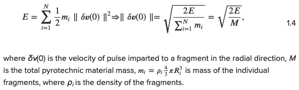
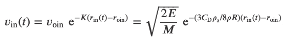
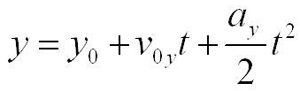
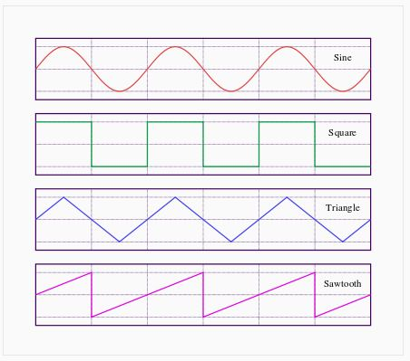
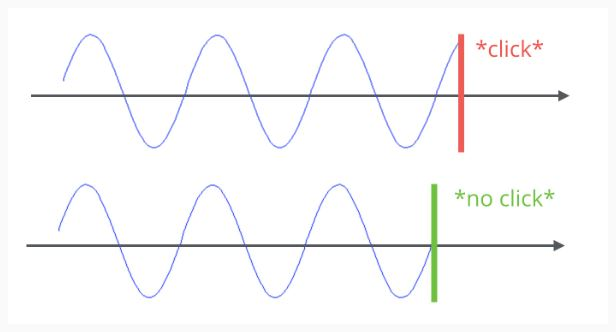
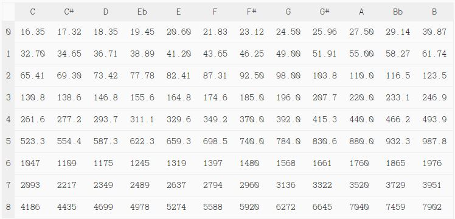

CS184 Final Project: Realistic Firework Particle Simulation
Frank Cuoco :: Lucas Huang :: Manh Khang Le :: Haoshen Ouyang

Abstract
In this project, we created an interactive realistic particle-based firework simulation that contains two main modes. “Music Mode” turns your keyboard into a musical firework piano, where each key within “ASDFGHJK” is tied to a specifically colored firework and note (one octave A4-A5). “Freestyle Mode” shoots a randomly colored firework to wherever you click on the screen (with an added trail effect). The fireworks physics themselves were created using mathematical formulas from class and research papers.
Technical approach
Physical Simulation
Our simulation aims to capture the evolution of firework particle movement over a set of time following a blast. For each blast fragment, we apply an initial velocity pulse releasing energy E converted from kinetic energy and calculated using the following equation:
In our simulation, we primarily focused on the drag force on our particles. This is modeled using the equation
where C_D is the drag coefficient, p_a is the density of air, p is the density of pyrotechnic display material, R is the radius of the shell, r_in is the outward normal position of the particle, and r_oin is the initial distance between the particle and inner detonation shell. This equation balances accuracy of the firework simulation with calculations involved per iteration. A constant drag coefficient is assumed, and the force of drag is assumed to significantly outweigh force of air and buoyancy at the speeds of the particles in calm air conditions.
Before the deflagration of the fireworks, firework shells are shot into the air and explode when reaching their high point. The vertical position of the particle over time may be found using the equation
where our acceleration a is an approximated gravitational acceleration g = -10 m/s^2. For the simulation of the shell, Euler's method is used to create an approximation of movement. As our acceleration is constant and we are using the calculations for a short one-dimensional segment, we avoid the error accumulation present from the method.
Music Notes
There are four main oscillators that can be used to generate sound in Javascript: sine, square, triangle, and sawtooth.
We decided to go with a sine wave for our tones in Music Mode, since it sounded the most natural (less distortion/harshness than others) using AudioContext(). In order to avoid a clicking sound at the end of each note, we added a gain node to the oscillator by using the .createGain() parameter of AudioContext().
To make the note stop ringing at a reasonable time, we used .exponentialRampToValueAtTime() to smoothly curtail the note at 1.5 seconds. Finally we set the frequency of the notes to whole steps from A4 to A5 (one octave) using a note frequencies chart (Hz)
A description of problems encountered and how you tackled them
We encountered many problems during this project. The main issue we had was having to shift the software that we were using for the project multiple times. We initially planned to export a batch of firework .dae files made in Blender into our Project 3 code, but soon realized through TA feedback and our own work that this was too labor intensive. We then switched to Roblox Studio engine and programming in Lua, but again decided it was not the best way to move forward after receiving concerns from Professor Ren that the platform would not allow us to make the most out of our efforts to create a satisfying simulation. Finally, we settled on using WebGL (three.js) for the project, since it solved all of those aforementioned issues. Most of the issues we faced during the project had to do with the growing pains of learning three.js. From setting the camera, to not seeing our fireworks properly, to creating a GUI to track the current mode, we solved most of our issues by scouring the internet for Stack Overflow threads and video tutorials. Ultimately, we were successful!
Results
Demos of the projects can be found here: A music demo of our firework simulation can be found at https://drive.google.com/file/d/1k2afLDFEfSQT_1U-b5va9mRTfwpIMoq3/view?usp=sharing A freestyle demo of our firework simulation can be found at https://drive.google.com/file/d/1JMMqkMvlXh91lmhIh2NaDPwp2fnGsHoP/view?usp=sharingLessons learned
One main lesson we learned is that it is extremely important to figure out the software you are using before you start to develop a project (especially one as open-ended as this one). If we attended office hours more frequently, we are certain we would have been steered in the right direction quicker than we did when using the spread out milestone and final presentation feedback and sparingly went to office hours for clarification on feedback. Additionally, we learned the true power of graphics software/packages like three.js and Blender. CS 184 is in C++ and goes heavily into the linear algebra side of computer graphics, and as a result, the technical burden of creating graphics features such as with the projects is heightened. Everything has to be done by hand and debugging can be excruciating with long rendering hours. With modern rendering software, however, the possibilities are truly infinite. Building off of a wealth of graphics research and optimization, their ease of use combined with extensive available resources (manuals, videos, stackoverflow, etc.) makes them incredibly powerful tools that we all will continue to utilize and learn more about after this semester.
References
Software References
Three.js Documentation https://threejs.org/docs/index.html#manual/en/introduction/Creating-a-scene
Three.js Animation Loop https://discoverthreejs.com/book/first-steps/animation-loop/
Generate Sounds Programmatically With Javascript https://marcgg.com/blog/2016/11/01/javascript-audio/
WebGL Cheat Sheet http://web.archive.org/web/20120314072005/http://www.nihilogic.dk/labs/webgl_cheat_sheet/WebGL_Cheat_Sheet.pdf
Keyboard Key Code Values https://www.oreilly.com/library/view/javascript-dhtml/9780596514082/apb.html
Research Articles
On Firework Blasts and Qualitative Parameter Dependency https://royalsocietypublishing.org/doi/epdf/10.1098/rspa.2015.0720
A Fast Algorithm for Particle Simulations https://users.flatironinstitute.org/~ahb/m126w12/public_html/Greengard1987JCP_Rokhlin_FMM_Coulomb_algorithm.pdf
Firework Simulation Based on Particle System in Virtual Scene https://ieeexplore-ieee-org.libproxy.berkeley.edu/document/5694137
Real-time Simulation of Fireworks Based on GPU and Particle System https://ieeexplore-ieee-org.libproxy.berkeley.edu/document/4958714
Rendering Fireworks Displays https://ieeexplore-ieee-org.libproxy.berkeley.edu/document/135912
Videos
Working with Three.js Particle Systems - They're AWESOME! https://www.youtube.com/watch?v=dLYMzNmILQA
Three.js Tutorial Crash Course - 2021 https://www.youtube.com/watch?v=YK1Sw_hnm58
Three.js Dat GUI Tutorial and Setup Guide https://www.youtube.com/watch?v=JyhhHhoqK2o
Contributions from each team member
Lucas: Led all team meetings. Provided guides to Three.js, Roblox Studio, Lua, and Blender. Handled groundwork of all design choices and how to implement physics. Handled core development of physics simulation and how to apply physics in Three.js.
Frank: I was heavily involved in implementing the two main modes of the web app. For “Freestyle Mode” I implemented the ability to click to launch firework, and to have that firework follow your mouse click location. For “Music Mode”, I implemented the proper sounding music notes, the specific colors of firework attached to each note, and the keys binded to each firework color/note pair. Lastly, I implemented a GUI and “ENTER” button press to allow the user to toggle between the two modes and know which mode they are currently using.
Haoshen: I am mainly working on the research of the particle physics simulation reference material, working on the math/physic logistics behind the simulation. Line out the project specifications and equations that need to be implemented. I wasn't involved a lot in the coding of the web app version of firework but I code and demo some of the fragment physics simulation inside a game engine at the early stage of the project.
Our webpage is at http://runaway.tech